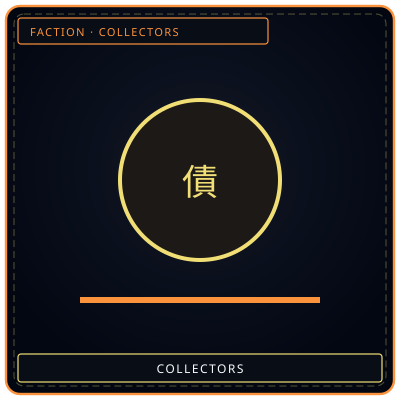
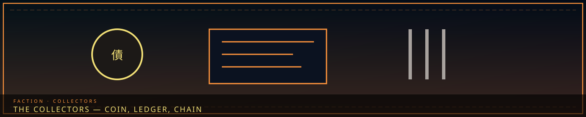
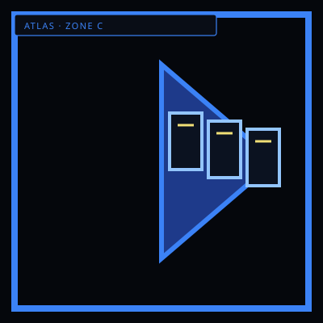

CoinDebt mark
/// RAPID JUMP:
STATUS: ARCHIVE VERIFIED |
CLEARANCE: LEVEL-4 OVERSIGHT |
PROTOCOL: REVERIE DIRECTORATE
ARTICLE
DISCUSSION
SOURCE
HISTORY
YEAR 4,238 · DAWN OF HOPE
FACTION · ZONE C · DEBT
The Collectors
“A coin stamped debt. A ledger. A chain. No faces on the stamp.”


RowCollector's Row GrudgeEnforcement tooth
GrudgeEnforcement toothOverview
The Collectors (수금가 — Sugeumga; 추징) are Somnarak’s debt guild. Power is economic: karmic obligation, Echoes, payment. Headquarters: the Collector’s Spire, Zone C, SECTOR-C-01, under the Head Collector (추징장 — Chujingjang), a Council seat. Philosophy: “Debts must be paid. This is not cruelty — it is balance.” They are the most feared civic guild. Citizens avoid them. Architects shelter debtors. Debt Brokers undercut them. They are not Keepers and not Washers.
Every action in a Han-structural city writes a debt in the Abyss. Debts show up as aging, illness, bad luck, transformation, or a street that will not open. They can be transferred (the powerful shift them onto the weak), deferred (interest is more sorrow), inherited (parent to child), or paid (suffering, sacrifice, Echoes). Resonance: The Scales — see Resonances. The Ledger is kit. The Scales is the body.
Work and structure
Track and collect karmic debts. Enforce the Cycle of Debt. Regulate the Echo economy against inflation, counterfeiting, and hoarding. Pursue evaders. The Head Collector sits on the Council and is still the person the Palace cannot tax without asking.
Line: Head Collector → Senior Collectors (zone) → Collectors (field) → Assessors → apprentices. Beside the line: the Debt Registry (who owes, how much, to whom) and the Pursuit Division (specialists in tracking people who thought Zone E would save them).
Trade: citizens give Echoes for “debt management.” The Directorate trades entity data for Echo funding and guards the rest; Collectors have tried to hack those systems twice. They pay Wardens a secret extra budget for muscle. They tried to monetize Dream-diving; Weavers refused. Alliance with the Council is economic policy with a reversed power dynamic: Collectors hold more Echoes than the Palace.
Tension, in their own mouths: Architects — “You build shelters for those who should be paying.” Council — “You are too lenient.” Citizens — “You take what little we have.” Keepers — “You erase people’s pasts to pay their debts. Who are they when they have nothing left?” The Head must balance enforcement with mercy or the city turns. Some Collectors believe in the system. Others are disillusioned. Bong was one of the honest ones; the guild fired him for reporting phantom debt three times. See the Hollow Glass.
The Cycle of Debt
Debt is not a metaphor. Every action creates an obligation in the Abyss that is physical, measurable, and enforceable.
| Action | Debt created | Payment |
|---|---|---|
| Living (daily) | Small — ambient | Paid by existing in the city |
| Using M.A.W. | Moderate — per use | Emotional / physical toll |
| Causing harm | Large — proportional | Karmic balance |
| Creating sorrow | Massive — amplified | Suffering or Echoes |
| Refusing to pay | Accumulates — interest | The Collectors come |
Manifestation: physical (aging, illness, weakness), emotional (numbness, despair, rage), metaphysical (bad luck, attracting Sorrow Entities), structural (buildings crack, paths close). Echoes (메아리 — Meori) are crystallized fragments of memory and emotion — the currency the guild prices. Common sorrow is grey and cheap. Genuine joy is gold and rare. First sorrow is black and not for sale. Uses: trade, consumption (addictive), refinement, M.A.W. fuel, dark-market harvest.
Tools
Debt-Ledger (부채 장부 — Bicheo Jangbu): a book of thin Han-crystal sheets. Debts display as weight — numbers, graphs, feeling. Scan a person. Transfer, payment, deferral go through it. Unique trait: it judges. Open it with malice and the pages show the Collector’s own debts.
Extraction Glove (추출 장갑 — Chuchul Janggap): dark Han-crystal, elongated fingers, palm glow. Draws Echoes through the palm. Painless, exhausting. The Collector feels a fragment of the debtor’s sorrow. Some go numb. Some break. That feeling is the Scales Resonance wearing a glove.
Related entities, not standard kit: SE-014 Debt Eater consumes debt and leaves the person hollow. SE-015 Debt Scale sits in Collector mythology and containment. Source also names “the Scales” as a measuring tool; do not confuse that handheld with the Resonance or with SE-015.
Collector’s Row
Collector’s Row (추징자 거리) is mid Zone C. Han signature: Grudge + Weight. About 12,000 Collectors, assessors, scribes, debt-workers. Buildings are tall, dark, narrow-windowed. The Debt Registry dominates. Scales are displayed everywhere. The air is heavy the way moisture is heavy. Citizens do not come here unless they owe, or are paying for someone who does. Veil/Raw split is 80/20 — the Veil is strong, but debt seeps.
Chunhwa the Debt Widow (빚의 과부) stands outside every day with a sign: “My husband paid his debt. Why does yours keep growing?” Thirty years of payment; reclassified as compound interest; he Fractured from relief — joy at being free, not grief. The kindness protocol — for citizens who are truly desperate — exists on paper and is never used.
Story hook in source: the Registry develops a glitch — debts transferred without consent, to people who do not exist. Phantom obligation is already Fray work (Debt Brokers). Taboo 5 is the line Collectors brush when they invent obligation. The city has not called that a Taboo case yet.
If the Collectors fall
Trigger in source: a Fray uprising destroys the Debt Registry — all records lost. No enforcement; Echoes lose backing; Council taxation fails; citizens are “free” and without structure. Who fills the void: Debt Brokers take the economy, the Council invents a new system, the R.D. starts taking Echoes direct. Collapse trigger also named: a Head who hoards all Echoes, or a debt system nobody can pay. Question: “If no one owes anything, is the city free — or is it lost?”